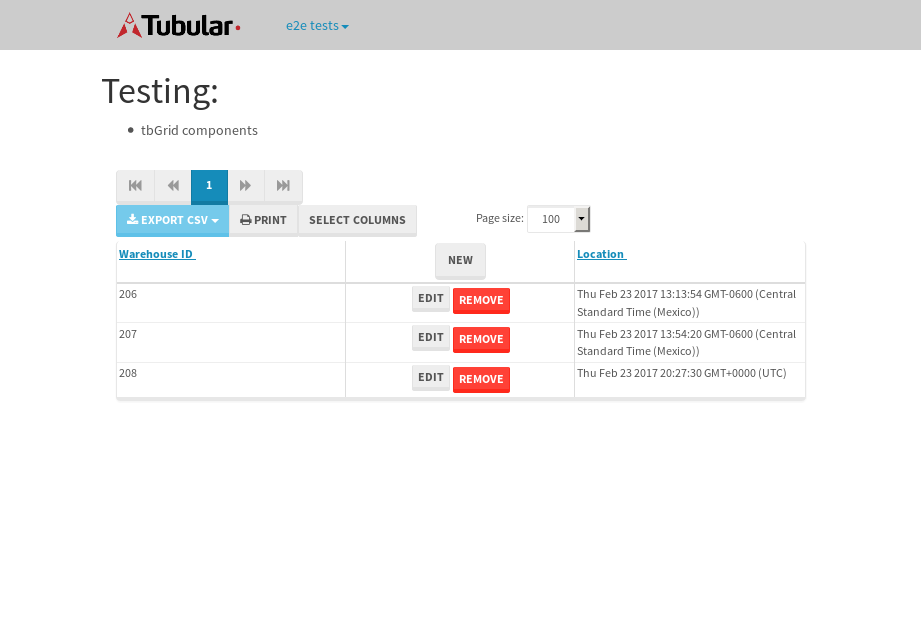

tbColumn.Grid Sorting - 28.441sTests: 5Skipped: 0Failures: 0 should sort data in ascending order then on descending order when sorting by Order Id column - 5.807sTests passed: 100.00%should order data in ascending order when click-sorting an unsorted text column - 5.293sTests passed: 100.00%should order data in descending order when click-sorting an ascending-sorted text column - 5.981sTests passed: 100.00%should order data in ascending order when click-sorting an unsorted date column - 5.541sTests passed: 100.00%should order data in descending order when click-sorting twice an unsorted date column - 5.818sTests passed: 100.00%
tbEmptyForm - 3.517sTests: 3Skipped: 0Failures: 0 should have an empty required field - 0.85sTests passed: 100.00%should not be able to click on save - 0.549sTests passed: 100.00%should load default value for numeric field - 0.541sTests passed: 100.00%
Tubular Filters.tbColumnFilter - 110.28sTests: 12Skipped: 0Failures: 0 should cancel filtering when clicking outside filter-popover - 8.934sTests passed: 100.00%should disable Value text-input for "None" filter - 8.547sTests passed: 100.00%should disable apply button for "None" filter - 6.692sTests passed: 100.00%should decorate popover button when showing data is being filtered for its column - 12.014sTests passed: 100.00%should correctly filter data for the "Equals" filtering option - 8.312sTests passed: 100.00%should correctly filter data for the "Not Equals" filtering option - 9.048sTests passed: 100.00%should correctly filter data for the "Contains" filtering option - 8.383sTests passed: 100.00%should correctly filter data for the "Not Contains" filtering option - 8.107sTests passed: 100.00%should correctly filter data for the "Starts With" filtering option - 6.899sTests passed: 100.00%should correctly filter data for the "Not Starts With" filtering option - 7.8sTests passed: 100.00%should correctly filter data for the "Ends With" filtering option - 7.028sTests passed: 100.00%should correctly filter data for the "Not Ends With" filtering option - 6.986sTests passed: 100.00%
Tubular Filters.tbColumnDateTimeFilter - 137.368sTests: 12Skipped: 0Failures: 0 should cancel filtering when clicking outside filter-popover - 7.289sTests passed: 100.00%should disable Value text-input for "None" filter - 6.737sTests passed: 100.00%should disable apply button for "None" filter - 6.995sTests passed: 100.00%should clear filtering when clicking on Clean button - 17.489sTests passed: 100.00%should decorate popover button when showing data is being filtered for its column - 11.851sTests passed: 100.00%should correctly filter data for the "Equals" filtering option - 7.086sTests passed: 100.00%should correctly filter data for the "Not Equals" filtering option - 7.975sTests passed: 100.00%should correctly filter data for the "Between" filtering option - 13.013sTests passed: 100.00%should correctly filter data for the "Greater-or-equal" filtering option - 12.296sTests passed: 100.00%should corretlly filter data for the "Greater" filtering option - 12.16sTests passed: 100.00%should correctly filter data for the "Less-or-equal" filtering option - 11.748sTests passed: 100.00%should correctly filter data for the "Less" filtering option - 11.829sTests passed: 100.00%
Tubular Filters.tbColumnOptionsFilter - 82.498sTests: 3Skipped: 0Failures: 0 should cancel filtering when clicking outside filter-popover - 8.899sTests passed: 100.00%should decorate popover button when showing data is being filtered for its column - 11.954sTests passed: 100.00%should filter column-elements in accordance to the selected filter when selecting a single option - 49.899sTests passed: 100.00%
Tubular Filters.tbTextSearch - 51.048sTests: 5Skipped: 0Failures: 0 min-chars is not set - 1.22sTests passed: 100.00%should filter data in searchable-column customer name to matching inputted text, starting from 3 characters - 7.438sTests passed: 100.00%should filter data in searchable-column shipper city to matching inputted text, starting from 3 characters - 12.291sTests passed: 100.00%should show clear button when there is inputted text only - 6.745sTests passed: 100.00%should clear filtering when clicking clear button - 17.593sTests passed: 100.00%
tbForm related components.tbCheckboxField - 7.687sTests: 2Skipped: 0Failures: 0 should save changes on "SAVE" - 3.606sTests passed: 100.00%should discard changes on "CANCEL" - 2.503sTests passed: 100.00%
tbForm related components.tbDropDownEditor - 12.615sTests: 5Skipped: 0Failures: 0 should set initial input value to the value of "value" attribute when defined - 2.01sTests passed: 100.00%should show the component name value in a label field when "showLabel" attribute is true - 1.845sTests passed: 100.00%should show a help field equal to this attribute, is present - 2.376sTests passed: 100.00%should submit modifications to item/server when clicking form "Save" - 3.414sTests passed: 100.00%should NOT submit modifications to item/server when clicking form "Cancel" - 2.343sTests passed: 100.00%
tbForm related components.tbTextArea - 18.662sTests: 7Skipped: 0Failures: 0 should set initial input value to the value of "value" attribute when defined - 2.136sTests passed: 100.00%should be invalidated when the number of chars is not in the range of "min" and "max" attributes - 2.586sTests passed: 100.00%should show the component name value in a label field when "showLabel" attribute is true - 1.952sTests passed: 100.00%should show a help field equal to this attribute, is present - 2.088sTests passed: 100.00%should require the field when the attribute "required" is true - 2.125sTests passed: 100.00%should submit modifications to item/server when clicking form "Save" - 3.585sTests passed: 100.00%should NOT submit modifications to item/server when clicking form "Cancel" - 3.492sTests passed: 100.00%
tbForm related components.tbDateEditor - 16.087sTests: 6Skipped: 0Failures: 0 should set initial date value to the value of "value" attribute when defined - 2.206sTests passed: 100.00%should be invalidated when the date is not in the range of "min" and "max" attributes - 2.608sTests passed: 100.00%should show the component name value in a label field when "showLabel" attribute is true - 1.858sTests passed: 100.00%should show a help field equal to this attribute, is present - 2.019sTests passed: 100.00%should submit modifications to item/server when clicking form "Save" - 3.539sTests passed: 100.00%should NOT submit modifications to item/server when clicking form "Cancel" - 2.98sTests passed: 100.00%
tbForm related components.tbTypeaheadEditor - 19.65sTests: 7Skipped: 0Failures: 0 should show an options list when there is an API-info/component entered-data - 2.592sTests passed: 100.00%should select the option clicked - 3.074sTests passed: 100.00%should show a "delete" button when an option/match is selected, and delete the option if button is clicked - 2.633sTests passed: 100.00%should show a label value equal to the component name when "showLabel" attribue is true - 1.908sTests passed: 100.00%should require a value when "require" attribute is true - 3.079sTests passed: 100.00%should submit modifications to item/server when clicking form "Save" - 3.456sTests passed: 100.00%should NOT submit modifications to item/server when clicking form "Cancel" - 2.326sTests passed: 100.00%
tbForm related components.tbSimpleEditor - 22.651sTests: 9Skipped: 0Failures: 0 should set initial input value to the value of "value" attribute when defined - 1.859sTests passed: 100.00%should be invalidated when the number of chars is not in the range of "min" and "max" attributes - 2.282sTests passed: 100.00%should show the component name value in a label field when "showLabel" attribute is true - 1.772sTests passed: 100.00%should set input placeholder to the value of "placeholder" attribute - 2.689sTests passed: 100.00%should validate the control using the "regex" attribute, if present - 2.561sTests passed: 100.00%should show a help field equal to this attribute, is present - 2.036sTests passed: 100.00%should require the field when the attribute "required" is true - 2.007sTests passed: 100.00%should submit modifications to item/server when clicking form "Save" - 4.168sTests passed: 100.00%should NOT submit modifications to item/server when clicking form "Cancel" - 2.129sTests passed: 100.00%
tbForm related components.tbNumericEditor - 17.373sTests: 7Skipped: 0Failures: 0 should set initial component value to the value of "value" attribute when defined - 1.943sTests passed: 100.00%should be invalidated when the entered number is not in the range of "min" and "max" attributes - 2.875sTests passed: 100.00%should show the component name value in a label field when "showLabel" attribute is true - 1.966sTests passed: 100.00%should show a help field equal to this attribute, is present - 2.032sTests passed: 100.00%should require the field when the attribute "required" is true - 2.056sTests passed: 100.00%should submit modifications to item/server when clicking form "Save" - 3.367sTests passed: 100.00%should NOT submit modifications to item/server when clicking form "Cancel" - 2.537sTests passed: 100.00%
tbForm Connection Error NoModelKey - 2.608sTests: 1Skipped: 0Failures: 0 tbForm connection error functionality - 0.572sTests passed: 100.00%
tbForm Connection Error NoServerUrl - 2.784sTests: 1Skipped: 0Failures: 0 tbForm connection error functionality - 0.591sTests passed: 100.00%
tbGridComponents - 11.035sTests: 6Skipped: 0Failures: 1 should add item with newRow method - 2.328sTests passed: 100.00%should add item with newRow method and cancel action - 0.87sTests passed: 100.00%should update item with tbSaveButton - 0.791sFailed: ElementNotVisibleError✗Tests passed: 0.00%should NOT update item on cancel Update action - 1.325sTests passed: 100.00%should remove item with tbRemoveButton - 1.337sTests passed: 100.00%should NOT remove item on cancel Remove action - 0.937sTests passed: 100.00%
tbGridPager.navigation buttons - 10.896sTests: 1Skipped: 0Failures: 0 should perform no action when clicking on the numbered navigation button corresponding to the current-showing results page - 1.526sTests passed: 100.00%
tbGridPager.navigation buttons.first/non-last results page related functionallity - 5.103sTests: 2Skipped: 0Failures: 0 should disable "first" and "previous" navigation buttons when in first results page - 2.085sTests passed: 100.00%should enable "last" and "next" navigation buttons when in a results page other than last - 3.018sTests passed: 100.00%
tbGridPager.navigation buttons.last/non-first results page related functionallity - 4.267sTests: 2Skipped: 0Failures: 0 should disable "last" and "next" navigation buttons when in last results page - 2.212sTests passed: 100.00%should enable "first" and "previous" navigation buttons when in a results page other than first - 2.055sTests passed: 100.00%
tbGridPager.page navigation - 9.257sTests: 5Skipped: 0Failures: 0 should go to next results page when clicking on next navigation button - 1.887sTests passed: 100.00%should go to previous results page when clicking on previous navigation button - 1.782sTests passed: 100.00%should go to last results page when clicking on last navigation button - 1.897sTests passed: 100.00%should go to first results page when clicking on first navigation button - 2.168sTests passed: 100.00%should go to corresponding results page when clicking on a numbered navigation button - 1.523sTests passed: 100.00%
tbGridPagerInfo - 5.697sTests: 2Skipped: 0Failures: 0 should show text in accordance to numbered of filter rows and current results-page - 2.104sTests passed: 100.00%should show count in footer - 0.671sTests passed: 100.00%
tbPageSizeSelctor - 13.356sTests: 4Skipped: 0Failures: 0 should filter up to 10 data rows per page when selecting a page size of "10" - 3.309sTests passed: 100.00%should filter up to 20 data rows per page when selecting a page size of "20" - 2.182sTests passed: 100.00%should filter up to 50 data rows per page when selecting a page size of "50" - 3.801sTests passed: 100.00%should filter up to 100 data rows per page when selecting a page size of "100" - 2.471sTests passed: 100.00%
tbRowSelectable - 12.237sTests: 2Skipped: 0Failures: 0 selected rows - 6.722sTests passed: 100.00%unselected rows - 3.89sTests passed: 100.00%
tbSingleForm - 19.774sTests: 8Skipped: 1Failures: 0 should load correct info - 0.001s***Skipped***Tests passed: 0%should change customer name - 2.553sTests passed: 100.00%should save it - 3.545sTests passed: 100.00%should clear the inputs - 2.463sTests passed: 100.00%should update - 2.887sTests passed: 100.00%should reset editor - 3.024sTests passed: 100.00%should not save if not Changes - 2.566sTests passed: 100.00%should not be able to click on save - 2.734sTests passed: 100.00%
{kind=link}